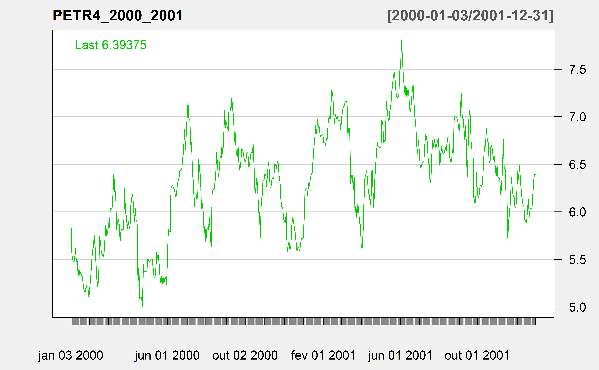
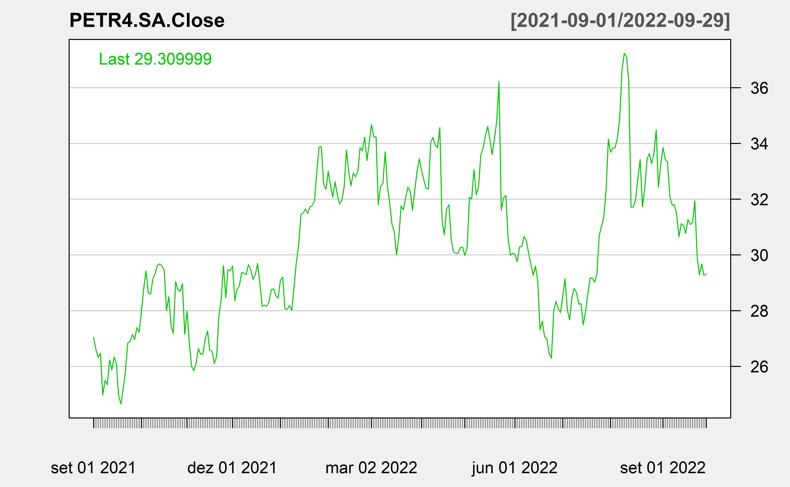

library(tidyverse)
library(kableExtra)
# parametros para o ggplot2
ggplot2::theme_set(ggplot2::theme_minimal(base_size = 16))
# parametros para imagens
knitr::opts_chunk$set(
fig.width = 8,
fig.asp = 0.618,
fig.retina = 3,
dpi = 300,
out.width = "80%"
)Inferência
Carregando bibliotecas
População
Vamos supor que nossa população (universo) seja composto de 1000 valores aleatórios gerados a partir de uma normal padrão.
set.seed(123)
populacao <- rnorm(1000,0,1)
summary(populacao) Min. 1st Qu. Median Mean 3rd Qu. Max.
-2.80978 -0.62832 0.00921 0.01613 0.66460 3.24104 Amostras
set.seed(125)
amostra1 <- sample(populacao, size=30)
set.seed(126)
amostra2 <- sample(populacao, size=30)
set.seed(127)
amostra3 <- sample(populacao, size=30)
set.seed(128)
amostra4 <- sample(populacao, size=30)
amostras <- cbind(amostra1, amostra2, amostra3, amostra4)
# amostras
medias <- colMeans(amostras)
desvios <- apply(amostras, 2,sd)
ic.i <- medias - 1.96*desvios
ic.s <- medias + 1.96*desvios
names(desvios) <- c("dp1", "dp2", "dp3", "dp4")
knitr::kable(cbind(medias,desvios, ic.i, ic.s), digits = 3)| medias | desvios | ic.i | ic.s | |
|---|---|---|---|---|
| amostra1 | 0.087 | 1.066 | -2.002 | 2.176 |
| amostra2 | -0.029 | 1.158 | -2.298 | 2.240 |
| amostra3 | -0.160 | 0.883 | -1.890 | 1.571 |
| amostra4 | 0.135 | 0.708 | -1.253 | 1.523 |
Amostras
set.seed(125)
amostra1 <- sample(populacao, size=100)
set.seed(126)
amostra2 <- sample(populacao, size=100)
set.seed(127)
amostra3 <- sample(populacao, size=100)
set.seed(128)
amostra4 <- sample(populacao, size=100)
amostras <- cbind(amostra1, amostra2, amostra3, amostra4)
medias <- colMeans(amostras)
desvios <- apply(amostras, 2,sd)
ic.i <- medias - 1.96*desvios
ic.s <- medias + 1.96*desvios
names(desvios) <- c("dp1", "dp2", "dp3", "dp4")
knitr::kable(cbind(medias,desvios, ic.i, ic.s), digits = 3)| medias | desvios | ic.i | ic.s | |
|---|---|---|---|---|
| amostra1 | 0.033 | 1.004 | -1.935 | 2.000 |
| amostra2 | 0.091 | 0.995 | -1.859 | 2.041 |
| amostra3 | 0.084 | 0.922 | -1.724 | 1.891 |
| amostra4 | -0.069 | 0.917 | -1.866 | 1.728 |
Preparando simulação
def.par <- par(no.readonly = TRUE) # salvando configuração
n=cbind(c(3, 10, 30), # tamanho de amostras para os gráficos 1ª distribuição
c(3, 10, 30), # tamanho de amostras para os gráficos 2ª distribuição
c(3, 10, 30), # tamanho de amostras para os gráficos 3ª distribuição
c(3, 10, 30)) # tamanho de amostras para os gráficos 4ª distribuição
X<-list(
x1 = matrix(NA,nrow=200,ncol=3), # Matriz que armazenara as médias da primeira dist
x2 = matrix(NA,nrow=200,ncol=3), # Matriz que armazenara as médias da segunda dist
x3 = matrix(NA,nrow=200,ncol=3), # Matriz que armazenara as médias da terceira dist
x4 = matrix(NA,nrow=200,ncol=3)) # Matriz que armazenara as médias da quarta dist
set.seed(123)
for ( i in 1:3){ # iterando ao longo do tamanho de amostras de cada linha
for ( j in 1: 200){ # Construindo 200 observacoes para cada gráfico
X$x1[j,i] <- mean( runif( n=n[i,1]))
# Calculando a média para cada uma das 200 simulacoes de uma distribuicao uniforme
X$x2[j,i] <- mean( rexp( n=n[i,2], rate=2))
# Calculando a média para cada uma das 200 simulacoes de uma distribuicao exponencial
X$x3[j,i] <- mean(rchisq( n=n[i,3], df=1))
# Calculando a média para cada uma das 200 simulacoes de uma distribuicao qui-quadrado
X$x4[j,i] <- mean( rbeta( n=n[i,4], shape1 = .2, shape2 = .2))
# Calculando a média para cada uma das 200 simulacoes de uma distribuicao beta
}
}Resultado das Simulações
Apresentação das 200 simulações das distribuições uniforme, exponencial, Chiquadrado e beta para os tamanhos de amostras n= 3, 10 e 30
Distribuição Uniforme
layout(rbind(c(1,2,3,4)))
plot(dunif(x = seq(0,1,0.05)),type="l", ylab="f(x)", main="fdp-Uniforme(0,1)", xlab="X")
hist(X$x1[,1], col = "lightblue3", border = "dark gray",
main = paste("n = ", n[1,1]), freq = FALSE, xlab="X_bar")
hist(X$x1[,2], col = "lightblue3", border = "dark gray",
main = paste("n = ", n[2,1]), freq = FALSE, xlab="X_bar")
hist(X$x1[,3], col = "lightblue3", border = "dark gray",
main = paste("n = ", n[3,1]), freq = FALSE, xlab="X_bar")
Distribuição exponencial
layout(rbind(c(1,2,3,4)))
plot(dexp(x = seq(0,1,0.05),rate=2),type="l", ylab="f(x)", main="fdp-Exponencial(1/2)", xlab="X")
hist(X$x2[,1], col = "lightblue3", border = "dark gray",
main = paste("n = ", n[1,2]), freq = FALSE, xlab="X_bar")
hist(X$x2[,2], col = "lightblue3", border = "dark gray",
main = paste("n = ", n[2,2]), freq = FALSE, xlab="X_bar")
hist(X$x2[,3], col = "lightblue3", border = "dark gray",
main = paste("n = ", n[3,2]), freq = FALSE, xlab="X_bar")
Distribuição Chi-Quadrado
layout(rbind(c(1,2,3,4)))
plot(dchisq(x = seq(0,1,0.05),df=1),type="l", ylab="f(x)", main="fdp-QuiQuad(1)", xlab="X")
hist(X$x3[,1], col = "lightblue3", border = "dark gray",
main = paste("n = ", n[1,3]), freq = FALSE, xlab="X_bar")
hist(X$x3[,2], col = "lightblue3", border = "dark gray",
main = paste("n = ", n[2,3]), freq = FALSE, xlab="X_bar")
hist(X$x3[,3], col = "lightblue3", border = "dark gray",
main = paste("n = ", n[3,3]), freq = FALSE, xlab="X_bar")Distribuição Beta
layout(rbind(c(1,2,3,4)))
plot(dbeta(x = seq(0,1,0.05), shape1 = .2, shape2 = .2),type="l", ylab="f(x)", main="fdp-Beta(0.2, 0.2)", xlab="X")
hist(X$x4[,1], col = "lightblue3", border = "dark gray",
main = paste("n = ", n[1,4]), freq = FALSE, xlab="X_bar")
hist(X$x4[,2], col = "lightblue3", border = "dark gray",
main = paste("n = ", n[2,4]), freq = FALSE, xlab="X_bar")
hist(X$x4[,3], col = "lightblue3", border = "dark gray",
main = paste("n = ", n[3,4]), freq = FALSE, xlab="X_bar")par(def.par) # restaurandoReamostragem
# Intervalos de Confiança Bootstrap
library(boot)
set.seed(123)
dados1 <- rnorm(n=100, mean = 5, sd = 1)
summary(dados1) Min. 1st Qu. Median Mean 3rd Qu. Max.
2.691 4.506 5.062 5.090 5.692 7.187 bootMediana <- function(dados, indices) median(dados[indices])
b <- boot(dados1, bootMediana, R = 1000)
b
ORDINARY NONPARAMETRIC BOOTSTRAP
Call:
boot(data = dados1, statistic = bootMediana, R = 1000)
Bootstrap Statistics :
original bias std. error
t1* 5.061756 -0.01277126 0.1315266plot(b)boot.ci(b, conf=0.95, type = c("norm", "basic", "perc", "bca"))BOOTSTRAP CONFIDENCE INTERVAL CALCULATIONS
Based on 1000 bootstrap replicates
CALL :
boot.ci(boot.out = b, conf = 0.95, type = c("norm", "basic",
"perc", "bca"))
Intervals :
Level Normal Basic
95% ( 4.817, 5.332 ) ( 4.806, 5.344 )
Level Percentile BCa
95% ( 4.780, 5.318 ) ( 4.777, 5.278 )
Calculations and Intervals on Original Scale